How to Automate the
Mass Scanning of Stamps
This article was prompted by a recent discussion on the newsgroup news:rec.collecting.stamps . A participant asked if it is possible to place a few dozen of stamp on the scanner at a time, and then have some software that automatically separates the individual stamps into separate image files.
Another participant proposed a software that he tested (link removed - not available on the Web anymore) and which did the job more or less properly, for a price.
Here I propose another solution, one that I have tried with my 4 - 5 years old scanner (HP Scanjet 5470c) and the largely known Adobe Photoshop program (that is expensive but it is one of the most complete on the market).
I have started with six stamps, that I have scanned at ones, with a scanning resolution of 600 pixel/inch. Please note that I have tried to scan with 300 ppi, but the final results weren't good enough.
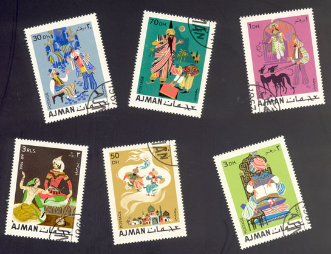
The stamps weren't aligned, because I saw that I get better results when the images are slanted. The image above is not the original one. For this article I have resampled it to 80 ppi, and then compressed it, in order to get a smaller file.
Then I have chosen from the menu: File -> Automate -> Crop and Straighten Photos, and I've got the results shown below:
|
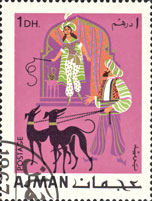 |
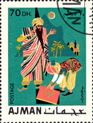 |
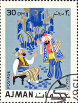 |
The original images (at 600 ppi) were actually resampled to 100 ppi and then lightly sharpened, a succession of operations that can be easily automated in Photoshop. The original scans looked of course better.
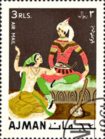 |
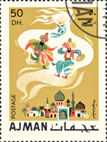 |
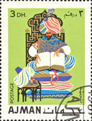 |
I was curious to know what happens if I try sticking together some images, and you can see the result below :
Not so bad, in my humble opinion. Then I've tried the same thing but this time with some imperforated stamps, that weren't always properly cut. Firstly, the general scan:
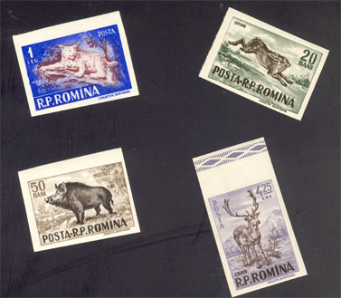
And now the individual results:
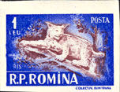 |
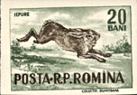 |
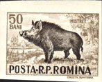 |
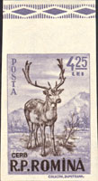 |
Quite amazing, isn't it?
In my opinion, when somebody has many stamps to scan, and when the demands aren't very high, the presented method is acceptable. If more is demanded, one can try to scan at 1200 ppi, for even better results. For those who already have Photoshop this method is probably the best one.
Update April 2012. An interesting article written by the well known Bill Sharpe just appeared in the last Linn's Stamps News online. Bill describes his positive experience with the free program named "Stamp Image Bursting Application", that can be downloaded from here: http://www.drakeserver.com/
The straightening of slanted images can be then done with different image editing programs, for example (says Bill) with the free MS Windows Live Photo Gallery.Here are my results of the separation with the mentioned program, by using the first scan presented on this page, the one that has a very low resolution.
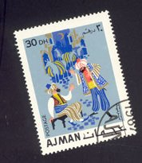
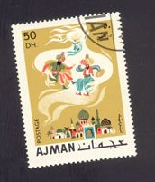
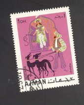
Four stamps were selected automatically by the program and the remaining two were manually framed by myself (it is easy to do). I haven't de-slanted the results, because this has to be done with another program.
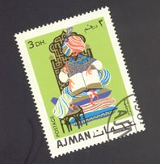
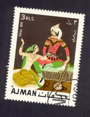
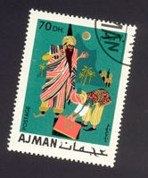
In my opinion this is a very good program, with an unbeatable price. Many thanks to Jason Drake, its author, and to Bill Sharpe, who reviewed it for Linn's!